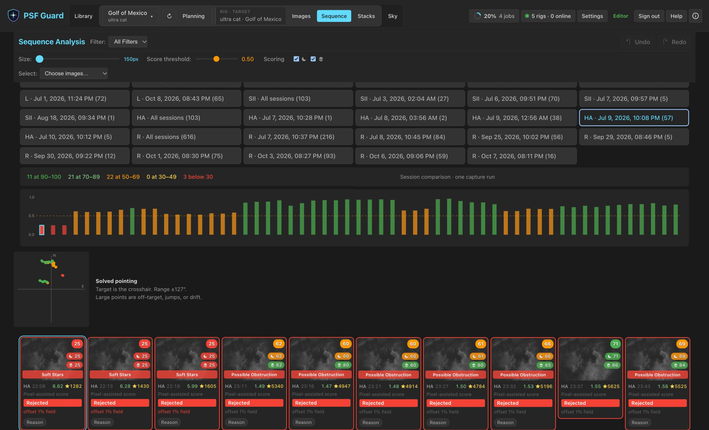

Astrometry Quality
A quality scan plate-solves each frame from its pixels with Seiza and compares the solved center and rotation with the intended target and the rest of the sequence. This page covers the pointing and rotation flags, how they score, and how to review and apply them.

Run a quality scan
- Choose a target in the header and open Images or Sequence.
- Click Analyze Quality. It shows when the target has new frames or results from an older quality model.
- Follow progress on the header's jobs chip, from any view. When the scan ends, Sequence shows the scores, the Solved pointing scatter and each frame's evidence.
The scan runs two stages, then refreshes the sequence scores: spatial and photometric screening for clouds, occlusion, transparency and stray light, then a fresh plate solve of each frame. Both stages work on several frames at once, as many as Settings → Performance → Processor use allows. A scan you start uses the share for work you wait on. Quality backfill and analysis of new frames use the background share and pause while you wait on other work. See Storage & Performance.
Results are cached per database. A solve is reused only while the file's size and modification time and the Seiza, star catalog and blind index fingerprints still match, so a replaced file is never graded from a stale WCS.
Flags
| Flag | Evidence | Score and recommendation |
|---|---|---|
| Off Target | The target lies outside the solved footprint, or a short departure is at least 20% of the field's short side away. | Pointing score 0; total capped at 0.20; rejection recommended. |
| Stable Offset | At least three frames in a row form a stable framing cluster, with the target still inside the footprint. | Advisory only: no cap, no rejection. |
| Pointing Jump | A short run leaves a framing cluster and later returns to it. | Total capped at 0.30; rejection recommended. |
| Pointing Drift | A robust Theil-Sen trend within one framing segment passes the field or scatter threshold. | Tail frames capped at 0.30; rejection recommended. |
| Rotation Skew | A short run sits more than 2° from the rotation the rotator held, or the field turned more than 5° while the rotator reported no turn. See Rotation skew. | Total capped at 0.30; rejection recommended; stacks leave the frame out. |
| Plate Solve Failed | The pixels decoded and the solver had what it needed, but no field matched or too few stars were found. | Small score cut. Rejection only when separate cloud, obstruction or tracking evidence agrees. |
| Solve unavailable (no flag) | Missing catalogs or index, a decode error, an unsupported image, a cancelled solve, or an internal failure. | Operational error only: no flag and no grade. |
Solved centers are clustered before any offset, jump or drift call. A lasting reframe (A → B, or a mosaic A → B → C) starts a new framing segment, so later frames are not called off target and no false drift spans the session. A short A → B → A excursion is a pointing jump. Drift is fitted inside each segment.
Rotation skew
Each solve gives the field's rotation: the direction of celestial north from image up, and whether the field is mirrored. Within a framing segment, frames whose rotation agrees within 2° form a run. Rotations are compared modulo a half turn, so a meridian flip is the same framing.
- Held framing. A run of three or more frames is framing the rotator held. A re-rotation in mid-session is not a fault.
- Short skew. A run shorter than three frames, or one that leaves the held angle and comes back to it, is skew. PSF Guard measures it against the nearest held framing.
- Rotator slip. However long the run, a field that turned more than 5° from the framing the rest of the target shares, while the rotator's reported angle (N.I.N.A.
RotatorPosition) did not turn with it, is skew. This catches a slip, a lost sync, or a camera turned by hand.
A turn the rotator reported is framing someone chose. A reading that moves while the field holds still changes nothing in the pixels. A rotator N.I.N.A. records as disconnected gives no reading. Skewed frames overlap the rest less and crop the stack, so they are capped, recommended for rejection and left out of stacks. The 2° tolerance is fixed.
When Target Scheduler recorded a planned rotation for the target, the sequence response carries it beside the solved value, with their difference in planned_rotation_offset_deg. It is for display and flags nothing: capture software records rotation by its own convention, and a recorded 0 counts as no plan.
Where the intended target comes from
PSF Guard reads the target from the catalog without changing its schema. Target RA/Dec fields come first; matching target metadata and capture-specific coordinates are fallbacks. Absolute Off Target grading runs only for supported epochs (J2000 or unspecified).
Without a target, solved centers still support relative jump and drift checks, on a tangent plane anchored at the first solved frame. That handles RA 0 wrap and polar fields. No frame is called Off Target without a target.
Review and apply recommendations
- In Sequence, pick Off target, Unsolved or Recommended from Select:.
- Click Review rejection. The review lists every selected image with its score, the proposed
[Auto]reason and the evidence. - Click Reject selected to write the grades, or Cancel.
Images already rejected stay as they are, and grading uses the normal undo and redo. Reasons name the evidence:
[Auto] Astrometry: Off target - score 0.20; offset 36% of field
[Auto] Astrometry: Tracking lost - score 0.30; pointing jump 420 arcsec
[Auto] Astrometry: Tracking drift - score 0.30; 95 arcsec/hour
[Auto] Astrometry: Rotator slip - score 0.30; field +7.2° from the rotator's angle
[Auto] Astrometry: Rotation skew - score 0.30; +5.0° from the sequence
[Auto] Quality: Plate solve failed + image degradation - score 0.30Regrade from the CLI
Start with --dry-run to see every proposed write.
# Preview every proposed database write
psf-guard screen-fits /path/to/lights --regrade-db my-db --dry-run
# Apply supported recommendations; already-rejected rows are untouched
psf-guard screen-fits /path/to/lights --regrade-db my-db--regrade-db matches each frame by file name and capture time (within ten minutes), loads its target, solves the pixels, and feeds the results through the same sequence grader the app uses. It adds satellite predictions only from orbital elements already in the cache; pass --cache-dir when the server uses another cache root. See Satellite Tracks.
A lone failed solve is reported and lowers the score but is not written as a rejection. Off-target, jump, drift and skew recommendations, and failed solves backed by separate degradation, can be written. Operational solver errors always abstain.
API
POST /api/db/{db_id}/analysis/quality-scan
{ target_id, filter_name?, force?, force_spatial?, force_astrometry?, force_satellites? }
GET /api/db/{db_id}/analysis/quality-scan
GET /api/db/{db_id}/analysis/sequence?target_id=...&weight_pointing=...The pointing weight adds to the score and renormalizes when missing, so a database that has not been scanned keeps its earlier scores. /analysis/spatial-scan remains as an alias for older clients.
Technical notes: docs/ASTROMETRY_QUALITY.md.